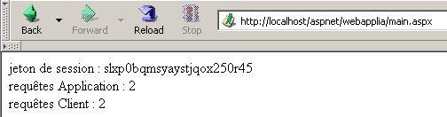
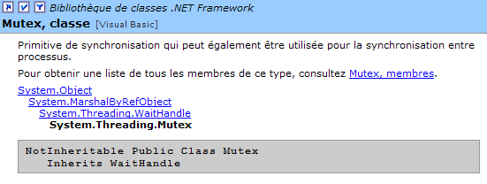
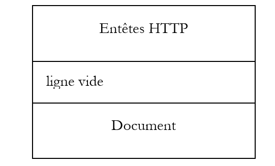
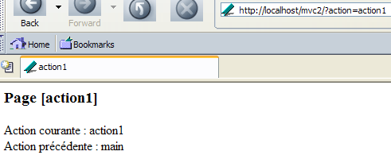

4. Os Fundamentos do Desenvolvimento ASP.NET
4.1. O conceito de uma aplicação Web ASP.NET
4.1.1. Introdução
Uma aplicação Web é uma aplicação que reúne vários documentos (HTML, código .NET, imagens, sons, etc.). Estes documentos devem estar localizados num único diretório raiz, conhecido como raiz da aplicação Web. Um caminho virtual no servidor Web está associado a esta raiz. Já abordámos o conceito de diretório virtual para o servidor Web Cassini. Este conceito também existe para o servidor Web IIS. Uma diferença importante entre os dois servidores é que, a qualquer momento, o IIS pode ter qualquer número de diretórios virtuais, enquanto o servidor Web Cassini tem apenas um — aquele especificado no arranque. Isto significa que o servidor IIS pode servir múltiplas aplicações Web simultaneamente, enquanto o servidor Cassini serve apenas uma de cada vez. Nos exemplos anteriores, o servidor Cassini era sempre iniciado com os parâmetros (<webroot>,/aspnet) que associavam a pasta virtual /aspnet à pasta física <webroot>. O servidor web, portanto, servia sempre a mesma aplicação web. Isto não nos impediu de escrever e testar páginas diferentes e independentes dentro desta única aplicação web. Cada aplicação web tem os seus próprios recursos, localizados sob a sua raiz física <webroot>:
- uma pasta [bin] onde podem ser colocadas classes pré-compiladas
- um ficheiro [global.asax] que permite inicializar a aplicação web como um todo, bem como o ambiente de execução para cada um dos seus utilizadores
- um ficheiro [web.config] que permite configurar o comportamento da aplicação
- um ficheiro [default.aspx] que serve como ponto de entrada da aplicação
- ...
Assim que uma aplicação utiliza um destes três recursos, necessita dos seus próprios caminhos físicos e virtuais. Na verdade, não há motivo para que duas aplicações web diferentes sejam configuradas da mesma forma. Os nossos exemplos anteriores podiam todos ser colocados na mesma aplicação (<webroot>,/aspnet) porque não utilizavam nenhum dos recursos acima mencionados.
Vamos revisitar a arquitetura MVC recomendada no início deste capítulo para o desenvolvimento de aplicações web:

A aplicação web é composta por ficheiros de classes (controladores, classes de negócio, classes de acesso a dados) e ficheiros de apresentação (documentos HTML, imagens, sons, folhas de estilo, etc.). Todos estes ficheiros serão colocados num único diretório raiz, ao qual nos referiremos por vezes como <application-path>. Este diretório raiz será associado a um caminho virtual <application-vpath>. O mapeamento entre este caminho virtual e o caminho físico é configurado através do servidor web. Vimos que, para o servidor Cassini, este mapeamento ocorre quando o servidor é iniciado. Por exemplo, numa janela de linha de comandos, iniciaríamos o Cassini com:
Na pasta <application-path>, dependendo das nossas necessidades, encontraremos:
- a pasta [bin] para colocar classes pré-compiladas (DLLs)
- o ficheiro [global.asax] quando precisamos de realizar a inicialização, seja durante o arranque da aplicação ou durante uma sessão do utilizador
- o ficheiro [web.config] quando precisamos de configurar a aplicação
- o ficheiro [default.aspx] quando precisarmos de uma página predefinida na aplicação
Para seguir este conceito de aplicação web, todos os exemplos a seguir serão colocados numa pasta <application-path> específica da aplicação, que será associada a uma pasta virtual <application-vpath>, uma vez que o servidor Cassini é iniciado para ligar estes dois parâmetros.
4.1.2. Configurar uma aplicação web
Se <application-path> for a raiz de uma aplicação ASP.NET, pode utilizar o ficheiro <application-path>\web.config para a configurar. Este ficheiro está no formato XML. Aqui está um exemplo:
<?xml version="1.0" encoding="UTF-8" ?>
<configuration>
<appSettings>
<add key="nom" value="tintin"/>
<add key="age" value="27"/>
</appSettings>
</configuration>
Tenha em atenção que as tags XML distinguem maiúsculas de minúsculas. Todas as informações de configuração devem estar entre as tags <configuration> e </configuration>. Existem várias secções de configuração disponíveis. Abordaremos apenas uma aqui: a secção <appSettings>, que permite inicializar dados utilizando a tag <add>. A sintaxe desta tag é a seguinte:
Quando o servidor web inicia uma aplicação, verifica se existe um ficheiro chamado web.config em <application-path>. Se existir, lê-o e armazena as suas informações num objeto [ConfigurationSettings], que estará disponível para todas as páginas da aplicação enquanto esta estiver ativa. A classe [ConfigurationSettings] possui um método estático [AppSettings]:

Para recuperar o valor de uma chave C do ficheiro de configuração, escreva ConfigurationSettings.AppSettings("C"). Isto devolve uma cadeia de caracteres. Para utilizar o ficheiro de configuração anterior, vamos criar uma página chamada [default.aspx]. O código VB no ficheiro [default.aspx.vb] será o seguinte:
Imports System.Configuration
Public Class _default
Inherits System.Web.UI.Page
Protected nom As String
Protected age As String
Private Sub Page_Load(ByVal sender As System.Object, ByVal e As System.EventArgs) Handles MyBase.Load
'retrieve configuration information
nom = ConfigurationSettings.AppSettings("nom")
age = ConfigurationSettings.AppSettings("age")
End Sub
End Class
Podemos ver que, quando a página é carregada, os valores dos parâmetros de configuração [name] e [age] são recuperados. Estes serão apresentados pelo código de apresentação em [default.aspx]:
<%@ Page src="default.aspx.vb" Language="vb" AutoEventWireup="false" Inherits="_default" %>
<html>
<head>
<title>Configuration</title>
</head>
<body>
Nom :
<% =nom %><br/>
Age :
<% =age %><br/>
</body>
</html>
Para o teste, coloque os ficheiros [web.config], [default.aspx] e [default.aspx.vb] na mesma pasta:
D:\data\devel\aspnet\poly\chap2\config1>dir
30/03/2004 15:06 418 default.aspx.vb
30/03/2004 14:57 236 default.aspx
30/03/2004 14:53 186 web.config
Seja <application-path> a pasta que contém os três ficheiros da aplicação. O servidor Cassini é iniciado com os parâmetros (<application-path>,/aspnet/config1). Solicitamos o URL [http://localhost/aspnet/config1]. Como [config1] é uma pasta, o servidor web irá procurar um ficheiro chamado [default.aspx] dentro dela e exibi-lo se o encontrar. Neste caso, irá encontrá-lo:

4.1.3. Aplicação, Sessão, Contexto
4.1.3.1. O ficheiro global.asax
O código no ficheiro [global.asax] é sempre executado antes de a página solicitada pelo pedido atual ser carregada. Deve estar localizado na raiz <application-path> da aplicação. Se existir, o ficheiro [global.asax] é utilizado em vários momentos pelo servidor web:
- quando a aplicação web inicia ou termina
- quando uma sessão de utilizador começa ou termina
- quando uma solicitação do utilizador começa
Tal como acontece com as páginas .aspx, o ficheiro [global.asax] pode ser escrito de diferentes formas, nomeadamente separando o código VB numa classe controladora e no código de apresentação. Esta é a escolha predefinida do Visual Studio, e faremos o mesmo aqui. Normalmente, não há apresentação para tratar, uma vez que esta função é atribuída às páginas .aspx. O conteúdo do ficheiro [global.asax] é, portanto, reduzido a uma diretiva que faz referência ao ficheiro que contém o código do controlador:
<%@ Application src="Global.asax.vb" Inherits="Global" %>
Note que a diretiva já não é [Page], mas sim [Application]. O código do controlador associado [global.asax.vb], gerado pelo Visual Studio, é o seguinte:
Imports System
Imports System.Web
Imports System.Web.SessionState
Public Class Global
Inherits System.Web.HttpApplication
Sub Application_Start(ByVal sender As Object, ByVal e As EventArgs)
' Triggered when application is started
End Sub
Sub Session_Start(ByVal sender As Object, ByVal e As EventArgs)
' Triggered when the session is started
End Sub
Sub Application_BeginRequest(ByVal sender As Object, ByVal e As EventArgs)
' Triggered at the start of each request
End Sub
Sub Application_AuthenticateRequest(ByVal sender As Object, ByVal e As EventArgs)
' Triggered when user authentication is attempted
End Sub
Sub Application_Error(ByVal sender As Object, ByVal e As EventArgs)
' Triggers when an error occurs
End Sub
Sub Session_End(ByVal sender As Object, ByVal e As EventArgs)
' Triggered when session ends
End Sub
Sub Application_End(ByVal sender As Object, ByVal e As EventArgs)
' Triggered when application ends
End Sub
End Class
Note que a classe controladora deriva da classe [HttpApplication]. Ao longo da vida de uma aplicação, ocorrem vários eventos importantes. Estes são tratados por procedimentos cujo esqueleto é apresentado acima.
- [Application_Start]: Recorde-se que uma aplicação web está «contida» num caminho virtual. A aplicação inicia-se assim que uma página localizada neste caminho virtual é solicitada por um cliente. O procedimento [Application_Start] é então executado. Esta será a única vez. Neste procedimento, realizaremos qualquer inicialização necessária para a aplicação, tal como a criação de objetos cujo tempo de vida corresponda ao da aplicação.
- [Application-End]: é executado quando a aplicação termina. Cada aplicação tem um tempo de espera de inatividade associado, configurável em [web.config], após o qual a aplicação é considerada encerrada. É, portanto, o servidor web que toma esta decisão com base nas configurações da aplicação. O tempo de espera de inatividade de uma aplicação é definido como o período durante o qual nenhum cliente fez um pedido de um recurso da aplicação.
- [Session-Start]/[Session_End]: É atribuída uma sessão a cada cliente, a menos que a aplicação esteja configurada para não ter sessões. Um cliente não é um utilizador sentado em frente a um ecrã. Se um utilizador tiver aberto dois navegadores para interagir com a aplicação, estes representam dois clientes. Um cliente é identificado por um token de sessão que deve incluir em cada uma das suas solicitações. Este token de sessão é uma sequência única de caracteres gerada aleatoriamente pelo servidor web. Não podem existir dois clientes com o mesmo token de sessão. Este token acompanha o cliente da seguinte forma:
- O cliente que faz a sua primeira solicitação não envia um token de sessão. O servidor web reconhece isso e atribui-lhe um. Isto marca o início da sessão, e o procedimento [Session_Start] é executado. Isto acontece apenas uma vez.
- O cliente efetua pedidos subsequentes enviando o token que o identifica. Isto permite ao servidor web recuperar informações associadas a este token. Isto permite o acompanhamento entre os vários pedidos do cliente.
- A aplicação pode fornecer ao cliente um formulário de fim de sessão. Neste caso, o próprio cliente inicia o encerramento da sessão. O procedimento [Session_End] será executado. Isto acontecerá apenas uma vez.
- O cliente pode nunca solicitar o encerramento da sessão por si próprio. Neste caso, após um determinado período de inatividade da sessão — que também pode ser configurado através do [web.config] — a sessão será encerrada pelo servidor web. O procedimento [Session_End] será então executado.
- [Application_BeginRequest]: Este procedimento é executado assim que chega um novo pedido. É, portanto, executado para cada pedido de qualquer cliente. Este é um bom momento para examinar o pedido antes de o encaminhar para a página solicitada. Pode até decidir redirecioná-lo para outra página.
- [Application_Error]: é executado sempre que ocorre um erro que não é explicitamente tratado pelo código no controlador [global.asax.vb]. Aqui, pode redirecionar a solicitação do cliente para uma página que explique a causa do erro.
Se nenhum destes eventos precisar de ser tratado, então o ficheiro [global.asax] pode ser ignorado. Foi isto que foi feito nos primeiros exemplos deste capítulo.
4.1.3.2. Exemplo 1
Vamos desenvolver uma aplicação para compreender melhor os três momentos-chave: arranque da aplicação, arranque da sessão e um pedido do cliente. O ficheiro [global.asax] terá o seguinte aspeto:
O ficheiro [global.asax.vb] associado terá o seguinte aspeto:
Imports System
Imports System.Web
Imports System.Web.SessionState
Public Class global
Inherits System.Web.HttpApplication
Sub Application_Start(ByVal sender As Object, ByVal e As EventArgs)
' Triggered when application is started
' we note the time
Dim startApplication As String = Date.Now.ToString("T")
' we place it in the context of the application
Application.Item("startApplication") = startApplication
End Sub
Sub Session_Start(ByVal sender As Object, ByVal e As EventArgs)
' Triggered when the session is started
' we note the time
Dim startSession As String = Date.Now.ToString("T")
' put it in the session
Session.Item("startSession") = startSession
End Sub
Sub Application_BeginRequest(ByVal sender As Object, ByVal e As EventArgs)
' we note the time
Dim startRequest As String = Date.Now.ToString("T")
' put it in the session
Context.Items("startRequest") = startRequest
End Sub
End Class
Os pontos-chave do código são os seguintes:
- O servidor web disponibiliza vários objetos à classe [HttpApplication] em [global.asax.vb]:
- Application do tipo [HttpApplicationState] — representa a aplicação web — fornece acesso a um dicionário de objetos [Application.Item] acessíveis a todos os clientes da aplicação — permite a partilha de informações entre diferentes clientes — o acesso simultâneo de leitura/gravação por vários clientes aos mesmos dados requer a sincronização dos clientes.
- Sessão do tipo [HttpSessionState] — representa um cliente específico — fornece acesso a um dicionário de objetos [Session.Item] acessíveis a todos os pedidos desse cliente — permite que informações sobre um cliente sejam armazenadas, podendo depois ser recuperadas ao longo dos pedidos do cliente.
- Pedido do tipo [HttpRequest] — representa o pedido HTTP atual do cliente
- Resposta do tipo [HttpResponse] — representa a resposta HTTP atualmente a ser construída pelo servidor para o cliente
- Servidor do tipo [HttpServerUtility] — fornece métodos utilitários, particularmente para redirecionar a solicitação para uma página diferente daquela originalmente pretendida.
- Contexto do tipo [HttpContext] — este objeto é recriado a cada nova solicitação, mas é partilhado por todas as páginas envolvidas no processamento da solicitação — permite que as informações sejam passadas de página para página durante o processamento da solicitação por meio do seu dicionário Items.
- O procedimento [Application_Start] regista o início da aplicação numa variável armazenada num dicionário acessível ao nível da aplicação
- O procedimento [Session_Start] regista o início da sessão numa variável armazenada num dicionário acessível ao nível da sessão
- O procedimento [Application_BeginRequest] regista o início da solicitação numa variável armazenada num dicionário acessível ao nível da solicitação (ou seja, disponível durante todo o seu processamento, mas perdida no final do mesmo)
A página de destino será a seguinte página [main.aspx]:
<%@ Page src="main.aspx.vb" Language="vb" AutoEventWireup="false" Inherits="main" %>
<html>
<head>
<title>global.asax</title>
</head>
<body>
jeton de session :
<% =jeton %><br/>
début Application :
<% =startApplication %><br/>
début Session :
<% =startSession %><br/>
début Requête :
<% =startRequest %><br/>
</body>
</html>
Esta página de apresentação exibe valores calculados pelo seu controlador [main.aspx.vb]:
Public Class main
Inherits System.Web.UI.Page
Protected startApplication As String
Protected startSession As String
Protected startRequest As String
Protected jeton as String
Private Sub Page_Load(ByVal sender As System.Object, ByVal e As System.EventArgs) Handles MyBase.Load
' retrieve application and session info
jeton=Session.SessionId
startApplication = Application.Item("startApplication").ToString
startSession = Session.Item("startSession").ToString
startRequest = Context.Items("startRequest").ToString
End Sub
End Class
O controlador simplesmente recupera as três informações armazenadas na aplicação, sessão e contexto pelo [global.asax.vb].
Testamos a aplicação da seguinte forma:
- os ficheiros são reunidos numa única pasta <application-path>

- o servidor Cassini é iniciado com os parâmetros (<caminho-da-aplicação>,/aspnet/globalasax1)
- um primeiro cliente solicita o URL [http://localhost/aspnet/globalasax1/main.aspx] e recebe o seguinte resultado:

- O mesmo cliente faz um novo pedido (usando a opção Atualizar do navegador):

Podemos ver que apenas a hora da solicitação mudou. Isso indica duas coisas:
- Os procedimentos [Application_Start] e [Session_Start] em [global.asax] não foram executados durante a segunda solicitação.
- Os objetos [Application] e [Session], onde os tempos de início da aplicação e da sessão foram armazenados, continuam disponíveis para a segunda solicitação.
- Iniciamos um segundo navegador para criar um segundo cliente e solicitamos novamente a mesma URL:

Desta vez, vemos que a hora da sessão mudou. O segundo navegador, embora na mesma máquina, foi tratado como um segundo cliente, e uma nova sessão foi criada para ele. Podemos ver que os dois clientes não têm o mesmo token de sessão. A hora de início da aplicação não mudou, o que significa que:
- o procedimento [Application_Start] em [global.asax.vb] não foi executado
- o objeto [Application], onde a hora de início da aplicação foi armazenada, está acessível ao segundo cliente. Portanto, este é o objeto no qual as informações que precisam de ser partilhadas entre os vários clientes da aplicação devem ser armazenadas, enquanto o objeto [Session] é utilizado para armazenar informações que precisam de ser partilhadas entre pedidos do mesmo cliente.
4.1.3.3. Uma visão geral
Com o que aprendemos até agora, podemos criar um diagrama preliminar que explica como funcionam um servidor web e as aplicações web que este serve:

O diagrama acima mostra um servidor a servir duas aplicações denominadas A e B, cada uma com dois clientes. Um servidor web é capaz de servir múltiplas aplicações web simultaneamente. Estas aplicações são completamente independentes umas das outras. Vamos concentrar-nos na aplicação A. O processamento de um pedido do cliente-1A à aplicação A decorrerá da seguinte forma:
- O cliente 1A solicita um recurso ao servidor web que pertence ao domínio da aplicação A. Isto significa que solicita um URL do tipo [http://machine:port/VA/ressource], em que VA é o caminho virtual da aplicação A.
- Se o servidor web detetar que esta é a primeira solicitação de um recurso da Aplicação A, aciona o evento [Application_Start] no ficheiro [global.asax] da Aplicação A. Será criado um objeto [ApplicationA] do tipo [HttpApplicationState]. As várias partes da aplicação irão armazenar dados com âmbito [Application] neste objeto, ou seja, dados relativos a todos os utilizadores. O objeto [ApplicationA] permanecerá até que o servidor web descarregue a aplicação A.
- Se o servidor web também detetar que está a lidar com um novo cliente para a Aplicação A, irá acionar o evento [Session_Start] no ficheiro [global.asax] da Aplicação A. Será criado um objeto [Session-1A] do tipo [HttpSessionState]. Este objeto permitirá que a Aplicação A armazene objetos com âmbito [Session], ou seja, objetos pertencentes a um cliente específico. O objeto [Session-1A] existirá enquanto o cliente 1A fizer pedidos. Isso permitirá o rastreamento deste cliente. O servidor web detecta que está a lidar com um novo cliente em dois casos:
- o cliente não enviou um token de sessão nos cabeçalhos HTTP da sua solicitação
- o cliente enviou um token de sessão que não existe (avaria do cliente ou tentativa de pirataria informática) ou que já não existe. Um token de sessão expira após um determinado período de inatividade do cliente (20 minutos por predefinição com o IIS). Este período de tempo limite é configurável.
- Em todos os casos, o servidor web irá acionar o evento [Application_BeginRequest] no ficheiro [global.asax]. Este evento inicia o processamento de uma solicitação do cliente. É comum não tratar este evento e passar o controlo para a página solicitada pelo cliente, que irá então processar a solicitação. Também podemos usar este evento para analisar a solicitação, processá-la e decidir qual a página que deve ser enviada em resposta. Iremos utilizar esta técnica para implementar uma aplicação que siga a arquitetura MVC que discutimos.
- Assim que o filtro em [global.asax] for ultrapassado, a solicitação do cliente é encaminhada para uma página .aspx que irá processá-la. Veremos mais adiante que é possível passar a solicitação por um filtro composto por várias páginas. A última página será responsável por enviar a resposta ao cliente. As páginas podem adicionar informações que tenham calculado à solicitação inicial do cliente. Podem armazenar essas informações na coleção Context.Items. Na verdade, todas as páginas envolvidas no processamento da solicitação de um cliente têm acesso a este conjunto de dados.
- O código das várias páginas tem acesso aos reservatórios de dados representados pelos objetos [ApplicationA], [Session-1A], ... É importante lembrar que o servidor web processa simultaneamente vários clientes para a aplicação A. Todos estes clientes têm acesso ao objeto [Application A]. Se precisarem de modificar dados neste objeto, é necessária a sincronização dos clientes. Cada cliente XA também tem acesso ao conjunto de dados [Session-XA]. Uma vez que este lhes está reservado, não é necessária qualquer sincronização neste caso.
- O servidor web serve múltiplas aplicações web simultaneamente. Não há interferência entre os clientes destas diferentes aplicações.
A partir destas explicações, podemos resumir os seguintes pontos:
- Em qualquer momento, um servidor web atende a vários clientes simultaneamente. Isto significa que não espera que um pedido termine antes de processar outro. No momento T, existem, portanto, vários pedidos a serem processados que pertencem a diferentes clientes para diferentes aplicações. O código de processamento em execução simultânea no servidor web é por vezes referido como threads de execução.
- Os threads de execução de clientes de diferentes aplicações web não interferem uns com os outros. Existe isolamento.
- As threads de execução de clientes da mesma aplicação podem precisar de partilhar dados:
- Os threads de execução para pedidos de dois clientes diferentes (que não tenham o mesmo token de sessão) podem partilhar dados através do objeto [Application].
- Os threads de execução para pedidos sucessivos do mesmo cliente podem partilhar dados através do objeto [Session].
- Os threads de execução para páginas sucessivas que processam a mesma solicitação de um determinado cliente podem partilhar dados através do objeto [Context].
4.1.3.4. Exemplo 2
Vamos desenvolver um novo exemplo que ilustre o que acabámos de abordar. Colocaremos os seguintes ficheiros na mesma pasta:
[global.asax]
[global.asax.vb]
Imports System
Imports System.Web
Imports System.Web.SessionState
Public Class global
Inherits System.Web.HttpApplication
Sub Application_Start(ByVal sender As Object, ByVal e As EventArgs)
' Triggered when application is started
' init customer counter
Application.Item("nbRequêtes") = 0
End Sub
Sub Session_Start(ByVal sender As Object, ByVal e As EventArgs)
' Triggered when the session is started
' init query counter
Session.Item("nbRequêtes") = 0
End Sub
End Class
O objetivo da aplicação é contar o número total de pedidos feitos à aplicação e o número de pedidos por cliente. Quando a aplicação é iniciada [Application_Start], o contador de pedidos feitos à aplicação é definido como 0. Este contador é colocado no âmbito [Application] porque deve ser incrementado por todos os clientes. Quando um cliente se liga pela primeira vez [Session_Start], definimos o contador de pedidos feitos por esse cliente como 0. Este contador é colocado no âmbito [Session] porque se aplica apenas a um cliente específico.
Assim que [global.asax] for executado, o seguinte ficheiro [main.aspx] será executado:
<%@ Page src="main.aspx.vb" Language="vb" AutoEventWireup="false" Inherits="main" %>
<html>
<head>
<title>application-session</title>
</head>
<body>
jeton de session :
<% =jeton %>
<br />
requêtes Application :
<% =nbRequêtesApplication %>
<br />
requêtes Client :
<% =nbRequêtesClient %>
<br />
</body>
</html>
Apresenta três informações calculadas pelo seu controlador:
- a identidade do cliente através do seu token de sessão: [token]
- o número total de pedidos feitos à aplicação: [nbRequêtesApplication]
- o número total de pedidos efetuados pelo cliente identificado como 1: [nbClientRequests]
As três informações são calculadas em [main.aspx.vb]:
Public Class main
Inherits System.Web.UI.Page
Protected nbRequêtesApplication As String
Protected nbRequêtesClient As String
Protected jeton As String
Private Sub Page_Load(ByVal sender As Object, ByVal e As System.EventArgs) Handles MyBase.Load
' one more request for the
Application.Item("nbRequêtes") = CType(Application.Item("nbRequêtes"), Integer) + 1
' one more request in the session
Session.Item("nbRequêtes") = CType(Session.Item("nbRequêtes"), Integer) + 1
' init presentation variables
nbRequêtesApplication = Application.Item("nbRequêtes").ToString
jeton = Session.SessionID
nbRequêtesClient = Session.Item("nbRequêtes").ToString
End Sub
End Class
Quando [main.aspx.vb] é executado, estamos a processar um pedido de um determinado cliente. Utilizamos o objeto [Application] para incrementar o número de pedidos da aplicação e o objeto [Session] para incrementar o número de pedidos do cliente cujo pedido estamos a processar atualmente. Lembre-se de que, embora todos os clientes da mesma aplicação partilhem o mesmo objeto [Application], cada um tem o seu próprio objeto [Session].
Testamos a aplicação colocando os quatro ficheiros anteriores numa pasta a que chamamos <application-path> e iniciamos o servidor Cassini com os parâmetros (<application-path>,/aspnet/webapplia). Abrimos um navegador e acedemos ao URL [http://localhost/aspnet/webapplia/main.aspx]:

Fazemos um segundo pedido utilizando o botão [Reload]:

Abrimos um segundo navegador para solicitar a mesma URL. Para o servidor web, este é um novo cliente:

Podemos ver que o token de sessão mudou, indicando um novo cliente. Isto reflete-se no número de pedidos do cliente. Agora, voltemos ao primeiro navegador e solicitemos a mesma URL novamente:

O número de pedidos feitos à aplicação é contado corretamente.
4.1.3.5. A Necessidade de Sincronizar os Clientes de uma Aplicação
Na aplicação anterior, o contador de solicitações feitas à aplicação é incrementado no procedimento [Form_Load] da página [main.aspx] da seguinte forma:
' une requête de plus pour l'application
Application.Item("nbRequêtes") = CType(Application.Item("nbRequêtes"), Integer) + 1
Esta instrução, embora simples, requer várias instruções do processador para ser executada. Vamos supor que sejam necessárias três:
- ler o contador
- incrementar o contador
- escrever o contador
O servidor web funciona numa máquina multitarefa, o que significa que cada tarefa tem acesso ao processador durante alguns milissegundos antes de o perder e, em seguida, recuperá-lo depois de todas as outras tarefas também terem tido a sua quota de tempo. Suponhamos que dois clientes, A e B, fazem um pedido ao servidor web ao mesmo tempo. Digamos que o cliente A seja o primeiro, entre no procedimento [Form_Load] em [main.aspx.vb], leia o contador (=100) e seja então interrompido porque o seu intervalo de tempo expirou. Agora, suponhamos que é a vez do cliente B e que este sofre o mesmo destino: chega ao método , lê o valor do contador (=100), mas não tem tempo para o incrementar. Os clientes A e B têm ambos um valor de contador de 100. Suponha que é novamente a vez do Cliente A: este incrementa o seu contador, define-o para 101 e, em seguida, termina. É agora a vez do Cliente B, que tem na sua posse o valor antigo do contador, e não o novo. Por conseguinte, também define o valor do contador para 101 e termina. O valor do contador de pedidos da aplicação está agora incorreto.
Para ilustrar este problema, vamos revisitar a aplicação anterior e modificá-la da seguinte forma:
- Os ficheiros [global.asax], [global.asax.vb] e [main.aspx] permanecem inalterados
- o ficheiro [main.aspx.vb] passa a ter o seguinte conteúdo:
Imports System.Threading
Public Class main
Inherits System.Web.UI.Page
Protected nbRequêtesApplication As Integer
Protected nbRequêtesClient As Integer
Protected jeton As String
Private Sub Page_Load(ByVal sender As Object, ByVal e As System.EventArgs) Handles MyBase.Load
' one more request for the application and session
' meter reading
nbRequêtesApplication = CType(Application.Item("nbRequêtes"), Integer)
nbRequêtesClient = CType(Session.Item("nbRequêtes"), Integer)
' wait 5 s
Thread.Sleep(5000)
' meter incrementation
nbRequêtesApplication += 1
nbRequêtesClient += 1
' meter registration
Application.Item("nbRequêtes") = nbRequêtesApplication
Session.Item("nbRequêtes") = nbRequêtesClient
' init presentation variables
jeton = Session.SessionID
End Sub
End Class
O incremento do contador foi dividido em quatro fases:
- leitura do contador
- suspensão do segmento de execução
- incrementar o contador
- reescrever o contador
Vamos considerar novamente os nossos dois clientes, A e B. Entre a fase de leitura e a fase de incremento dos contadores de pedidos, forçamos a thread de execução a fazer uma pausa de 5 segundos. A consequência imediata disto é que ela perderá o processador, que será então alocado a outra tarefa. Suponhamos que o cliente A seja o primeiro. Ele irá ler o valor do contador N e será interrompido durante 5 segundos. Se, durante esse tempo, o cliente B tiver acesso à CPU, deverá ler o mesmo valor do contador N. Em última análise, ambos os clientes deverão apresentar o mesmo valor do contador, o que seria anormal.
Testamos a aplicação colocando os quatro ficheiros anteriores numa pasta a que chamamos <application-path> e iniciamos o servidor Cassini com os parâmetros (<application-path>,/aspnet/webapplib). Configuramos dois navegadores diferentes com a URL [http://localhost/aspnet/webapplib/main.aspx]. Iniciamos o primeiro para solicitar a URL e, em seguida, sem esperar pela resposta que chegará 5 segundos depois, iniciamos o segundo navegador. Após pouco mais de 5 segundos, obtemos o seguinte resultado:

Vemos:
- que temos dois clientes diferentes (não o mesmo token de sessão)
- que cada cliente efetuou um pedido
- que o contador de pedidos feitos à aplicação deveria, portanto, estar em 2 num dos dois navegadores. Não é esse o caso.
Agora, vamos tentar outra experiência. Utilizando o mesmo navegador, enviamos cinco pedidos para a URL [http://localhost/aspnet/webapplib/main.aspx]. Mais uma vez, enviamo-los um após o outro sem esperar pelos resultados. Assim que todos os pedidos tiverem sido executados, obtemos o seguinte resultado para o último:

Podemos observar:
- que as 5 solicitações foram consideradas como provenientes do mesmo cliente, porque o contador de solicitações do cliente está em 5. Embora não seja mostrado acima, podemos ver que o token de sessão é de facto o mesmo para todas as 5 solicitações.
- que o contador de pedidos feitos à aplicação está correto.
O que podemos concluir? Nada definitivo. Talvez o servidor web não comece a executar uma solicitação de um cliente se esse cliente já tiver uma em andamento? Portanto, nunca haveria execução simultânea de solicitações do mesmo cliente. Elas seriam executadas uma após a outra. Este ponto precisa ser verificado. Pode, de facto, depender do tipo de cliente utilizado.
4.1.3.6. Sincronização de clientes
O problema destacado na aplicação anterior é um problema clássico (mas não fácil de resolver) de acesso exclusivo a um recurso. No nosso caso específico, temos de garantir que dois clientes, A e B, não possam estar ambos na sequência de código ao mesmo tempo:
- ler o contador
- incrementar o contador
- escrever no contador
Essa sequência de código é chamada de secção crítica. Ela requer a sincronização dos threads que a executam simultaneamente. A plataforma .NET oferece várias ferramentas para garantir isso. Aqui, utilizaremos a classe [Mutex].

Aqui, utilizaremos apenas os seguintes construtores e métodos:
cria um objeto de sincronização M | |
A thread T1, que executa a operação M.WaitOne(), solicita a posse do objeto de sincronização M. Se o Mutex M não estiver na posse de nenhuma thread (o caso inicial), ele é «concedido» à thread T1, que o solicitou. Se, pouco depois, a thread T2 realizar a mesma operação, será bloqueada. Isto porque um mutex só pode pertencer a uma thread de cada vez. Será libertado quando a thread T1 libertar o mutex M que detém. Assim, várias threads podem ficar bloqueadas enquanto aguardam o mutex M. | |
A thread T1 que executa a operação M.ReleaseMutex() renuncia à posse do mutex M. Quando a thread T1 perde o processador, o sistema pode atribuí-lo a uma das threads que aguardam o mutex M. Apenas uma o obterá por sua vez; as outras que aguardam M permanecem bloqueadas |
Um mutex M gere o acesso a um recurso partilhado R. Uma thread solicita o recurso R através de M.WaitOne() e liberta-o através de M.ReleaseMutex(). Uma secção crítica de código que deve ser executada por apenas uma thread de cada vez é um recurso partilhado. A sincronização da execução da secção crítica pode ser alcançada da seguinte forma:
onde M é um objeto Mutex. É claro que nunca se deve esquecer de libertar um Mutex que já não seja necessário, para que outra thread possa entrar na secção crítica por sua vez; caso contrário, as threads que aguardam um Mutex que nunca é libertado nunca terão acesso ao processador. Além disso, deve-se evitar uma situação de impasse em que duas threads aguardam uma pela outra. Considere as seguintes ações a ocorrerem em sequência:
- uma thread T1 adquire a posse de um Mutex M1 para aceder a um recurso partilhado R1
- uma thread T2 adquire um Mutex M2 para aceder a um recurso partilhado R2
- A thread T1 solicita o Mutex M2. Ela é bloqueada.
- A thread T2 solicita o Mutex M1. Fica bloqueada.
Aqui, as threads T1 e T2 estão à espera uma da outra. Esta situação ocorre quando as threads necessitam de dois recursos partilhados: o recurso R1 controlado pelo Mutex M1 e o recurso R2 controlado pelo Mutex M2. Uma solução possível é solicitar ambos os recursos ao mesmo tempo utilizando um único mutex M. Mas isto nem sempre é possível, especialmente se resultar num bloqueio prolongado de um recurso dispendioso. Outra solução é que uma thread que detém M1 e que não consegue obter M2 liberte M1 para evitar o impasse.
Se colocarmos em prática o que acabámos de aprender, a nossa aplicação fica da seguinte forma:
- os ficheiros [global.asax] e [main.aspx] permanecem inalterados
- o ficheiro [global.asax.vb] passa a ter o seguinte aspeto:
Imports System
Imports System.Web
Imports System.Web.SessionState
Imports System.Threading
Public Class global
Inherits System.Web.HttpApplication
Sub Application_Start(ByVal sender As Object, ByVal e As EventArgs)
' Triggered when application is started
' init customer counter
Application.Item("nbRequêtes") = 0
' create a synchronization lock
Application.Item("verrou") = New Mutex
End Sub
Sub Session_Start(ByVal sender As Object, ByVal e As EventArgs)
' Triggered when the session is started
' init query counter
Session.Item("nbRequêtes") = 0
End Sub
End Class
A única novidade é a criação de um [Mutex] que será utilizado pelos clientes para sincronização. Como deve estar acessível a todos os clientes, é colocado no objeto [Application].
- O ficheiro [main.aspx.vb] fica com o seguinte aspeto:
Imports System.Threading
Public Class main
Inherits System.Web.UI.Page
Protected nbRequêtesApplication As Integer
Protected nbRequêtesClient As Integer
Protected jeton As String
Private Sub Page_Load(ByVal sender As Object, ByVal e As System.EventArgs) Handles MyBase.Load
' one more request for the application and session
' enter a critical section - retrieve the synchronization lock
Dim verrou As Mutex = CType(Application.Item("verrou"), Mutex)
' we ask you to enter the following critical section on your own
verrou.WaitOne()
' meter reading
nbRequêtesApplication = CType(Application.Item("nbRequêtes"), Integer)
nbRequêtesClient = CType(Session.Item("nbRequêtes"), Integer)
' wait 5 s
Thread.Sleep(5000)
' meter incrementation
nbRequêtesApplication += 1
nbRequêtesClient += 1
' meter registration
Application.Item("nbRequêtes") = nbRequêtesApplication
Session.Item("nbRequêtes") = nbRequêtesClient
' allows access to the critical section
verrou.ReleaseMutex()
' init presentation variables
jeton = Session.SessionID
End Sub
End Class
Podemos ver que o cliente:
- solicita entrar na secção crítica sozinho. Para tal, solicita a posse exclusiva do mutex [bloqueio]
- libera o mutex [bloqueio] no final da seção crítica para que outro cliente possa entrar na seção crítica por sua vez.
Testamos a aplicação colocando os quatro ficheiros anteriores numa pasta a que chamamos <application-path> e iniciamos o servidor Cassini com os parâmetros (<application-path>,/aspnet/webapplic). Abrimos dois navegadores diferentes com a URL [http://localhost/aspnet/webapplic/main.aspx]. Iniciamos o primeiro para solicitar a URL e, em seguida, sem esperar pela resposta que chegará 5 segundos depois, iniciamos o segundo navegador. Após pouco mais de 5 segundos, obtemos o seguinte resultado:

Desta vez, o contador de pedidos da aplicação está correto.
A principal lição a reter desta longa demonstração é a necessidade absoluta de sincronizar os clientes da mesma aplicação web, caso precisem de atualizar elementos partilhados por todos os clientes.
4.1.3.7. Gestão de tokens de sessão
Já discutimos várias vezes o token de sessão trocado entre o cliente e o servidor web. Vamos rever como funciona:
- O cliente faz uma solicitação inicial ao servidor. Ele não envia um token de sessão.
- Como o token de sessão está ausente da solicitação, o servidor reconhece um novo cliente e atribui-lhe um token. Associado a este token está um objeto [Session] que será usado para armazenar informações específicas deste cliente. O token acompanhará todas as solicitações deste cliente. Ele será incluído nos cabeçalhos HTTP da resposta à primeira solicitação do cliente.
- O cliente conhece agora o seu token de sessão. Irá enviá-lo de volta nos cabeçalhos HTTP de cada pedido subsequente que fizer ao servidor web. Graças ao token, o servidor poderá recuperar o objeto [Session] associado ao cliente.
Para demonstrar este mecanismo, vamos revisitar a aplicação anterior, modificando apenas o ficheiro [main.aspx.vb]:
Imports System.Threading
Public Class main
Inherits System.Web.UI.Page
Protected nbRequêtesApplication As Integer
Protected nbRequêtesClient As Integer
Protected jeton As String
Private Sub Page_Load(ByVal sender As Object, ByVal e As System.EventArgs) Handles MyBase.Load
' one more request for the application and session
' enter a critical section - retrieve the synchronization lock
Dim verrou As Mutex = CType(Application.Item("verrou"), Mutex)
' you ask to enter the next section on your own
verrou.WaitOne()
' meter reading
nbRequêtesApplication = CType(Application.Item("nbRequêtes"), Integer)
nbRequêtesClient = CType(Session.Item("nbRequêtes"), Integer)
' wait 5 s
Thread.Sleep(5000)
' counter incrementation
nbRequêtesApplication += 1
nbRequêtesClient += 1
' meter registration
Application.Item("nbRequêtes") = nbRequêtesApplication
Session.Item("nbRequêtes") = nbRequêtesClient
' allows access to the critical section
verrou.ReleaseMutex()
' init presentation variables
jeton = Session.SessionID
End Sub
Private Sub Page_Init(ByVal sender As Object, ByVal e As System.EventArgs) Handles MyBase.Init
' the client request is stored in request.txt of the application folder
Dim requestFileName As String = Me.MapPath(Me.TemplateSourceDirectory) + "\request.txt"
Me.Request.SaveAs(requestFileName, True)
End Sub
End Class
Quando o evento [Page_Init] ocorre, guardamos o pedido do cliente no diretório da aplicação. Vamos rever alguns pontos:
- [TemplateSourceDirectory] representa o caminho virtual da página atualmente em execução,
- MapPath(TemplateSourceDirectory) representa o caminho físico correspondente. Isto permite-nos construir o caminho físico do ficheiro a ser criado,
- [Request] é um objeto que representa a solicitação atualmente em processamento. Este objeto foi construído através do processamento da solicitação bruta enviada pelo cliente, ou seja, uma sequência de linhas de texto no formato:

- Request.Save([FileName]) guarda toda a solicitação do cliente (cabeçalhos HTTP e, se aplicável, o documento que se segue) num ficheiro cujo caminho é passado como parâmetro.
Assim, poderemos saber exatamente qual foi a solicitação do cliente. Testamos a aplicação colocando os quatro ficheiros anteriores numa pasta que chamamos de <application-path> e iniciamos o servidor Cassini com os parâmetros (<application-path>,/aspnet/session1). Em seguida, utilizando um navegador, solicitamos a URL
[http://localhost/aspnet/session1/main.aspx]. Obtemos o seguinte resultado:

Utilizamos o ficheiro [request.txt] guardado pelo [main.aspx.vb] para aceder à solicitação do navegador:
GET /aspnet/session1/main.aspx HTTP/1.1
Cache-Control: max-age=0
Connection: keep-alive
Keep-Alive: 300
Accept: text/xml,application/xml,application/xhtml+xml,text/html;q=0.9,text/plain;q=0.8,image/png,*/*;q=0.5
Accept-Charset: ISO-8859-1,utf-8;q=0.7,*;q=0.7
Accept-Encoding: gzip,deflate
Accept-Language: en-us,en;q=0.5
Host: localhost
User-Agent: Mozilla/5.0 (Windows; U; Windows NT 5.0; en-US; rv:1.7b) Gecko/20040316
Vemos que o navegador fez um pedido para o URL [/aspnet/session1/main.aspx] e enviou outras informações que discutimos no capítulo anterior. Não há nenhum token de sessão visível aqui. A página recebida em resposta mostra que o servidor criou um token de sessão. Ainda não sabemos se o navegador o recebeu. Vamos agora fazer um segundo pedido usando o mesmo navegador (Atualizar). Recebemos a seguinte nova resposta:

O rastreamento de sessão está de facto a funcionar, uma vez que a contagem de pedidos de sessão foi incrementada corretamente. Vejamos agora o conteúdo do ficheiro [request.txt]:
GET /aspnet/session1/main.aspx HTTP/1.1
Cache-Control: max-age=0
Connection: keep-alive
Keep-Alive: 300
Accept: text/xml,application/xml,application/xhtml+xml,text/html;q=0.9,text/plain;q=0.8,image/png,*/*;q=0.5
Accept-Charset: ISO-8859-1,utf-8;q=0.7,*;q=0.7
Accept-Encoding: gzip,deflate
Accept-Language: en-us,en;q=0.5
Cookie: ASP.NET_SessionId=y153tk45sise0lrhdzrf22m3
Host: localhost
User-Agent: Mozilla/5.0 (Windows; U; Windows NT 5.0; en-US; rv:1.7b) Gecko/20040316
Podemos ver que, para esta segunda solicitação, o navegador enviou ao servidor um novo cabeçalho HTTP [Cookie:] definindo uma informação chamada [ASP.NET_SessionId] com um valor igual ao token de sessão que apareceu na resposta à primeira solicitação. Utilizando este token, o servidor web associará esta nova solicitação ao objeto [Session] identificado pelo token [y153tk45sise0lrhdzrf22m3] e recuperará o contador de solicitações associado.
Ainda não sabemos qual o mecanismo pelo qual o servidor enviou o token ao cliente, uma vez que não temos acesso à resposta HTTP do servidor. Recorde-se que esta resposta tem a mesma estrutura que o pedido do cliente, nomeadamente um conjunto de linhas de texto com o seguinte formato:

Anteriormente, utilizámos um cliente web que nos deu acesso à resposta HTTP do servidor web: o cliente curl. Vamos utilizá-lo novamente, numa janela de linha de comandos, para consultar o mesmo URL que o navegador anterior:
E:\curl>curl --include http://localhost/aspnet/session1/main.aspx
HTTP/1.1 200 OK
Server: Microsoft ASP.NET Web Matrix Server/0.6.0.0
Date: Thu, 01 Apr 2004 07:31:42 GMT
X-AspNet-Version: 1.1.4322
Set-Cookie: ASP.NET_SessionId=qxnxmqmvhde3al55kzsmx445; path=/
Cache-Control: private
Content-Type: text/html; charset=utf-8
Content-Length: 228
Connection: Close
<HTML>
<HEAD>
<title>application-session</title>
</HEAD>
<body>
jeton de session :
qxnxmqmvhde3al55kzsmx445
<br>
requêtes Application :
3
<br>
requêtes Client :
1
<br>
</body>
</HTML>
Temos a resposta à nossa pergunta. O servidor web envia o token de sessão na forma de um cabeçalho HTTP [Set-Cookie:]:
Vamos fazer o mesmo pedido sem enviar o token de sessão. Obtemos a seguinte resposta:
E:\curl>curl --include http://localhost/aspnet/session1/main.aspx
HTTP/1.1 200 OK
Server: Microsoft ASP.NET Web Matrix Server/0.6.0.0
Date: Thu, 01 Apr 2004 07:36:06 GMT
X-AspNet-Version: 1.1.4322
Set-Cookie: ASP.NET_SessionId=cs2p12mehdiz5v55ihev1kaz; path=/
Cache-Control: private
Content-Type: text/html; charset=utf-8
Content-Length: 228
Connection: Close
<HTML>
<HEAD>
<title>application-session</title>
</HEAD>
<body>
jeton de session :
cs2p12mehdiz5v55ihev1kaz
<br>
requêtes Application :
4
<br>
requêtes Client :
1
<br>
</body>
</HTML>
Como não reenviámos o token de sessão, o servidor não conseguiu identificar-nos e emitiu um novo token. Para continuar uma sessão existente, o cliente deve reenviar o token de sessão que recebeu para o servidor. Faremos isso aqui usando a opção [--cookie key=value] do curl, que irá gerar o cabeçalho HTTP [Cookie: key=value]. Vimos que o navegador enviou este cabeçalho HTTP na sua segunda solicitação.
E:\curl>curl --include --cookie ASP.NET_SessionId=cs2p12mehdiz5v55ihev1kaz http://localhost/aspnet/session1/main.aspx
HTTP/1.1 200 OK
Server: Microsoft ASP.NET Web Matrix Server/0.6.0.0
Date: Thu, 01 Apr 2004 07:40:20 GMT
X-AspNet-Version: 1.1.4322
Cache-Control: private
Content-Type: text/html; charset=utf-8
Content-Length: 228
Connection: Close
<HTML>
<HEAD>
<title>application-session</title>
</HEAD>
<body>
jeton de session :
cs2p12mehdiz5v55ihev1kaz
<br>
requêtes Application :
5
<br>
requêtes Client :
2
<br>
</body>
</HTML>
Há vários aspetos que merecem destaque:
- o contador de pedidos do cliente foi efetivamente incrementado, indicando que o servidor reconheceu com sucesso o nosso token.
- o token de sessão exibido pela página é, de facto, aquele que enviámos
- O token de sessão já não consta dos cabeçalhos HTTP enviados pelo servidor web. Na verdade, o servidor envia-o apenas uma vez: ao gerar o token no início de uma nova sessão. Assim que o cliente obtém o seu token, cabe-lhe a ele utilizá-lo sempre que pretender ser reconhecido.
Nada impede um cliente de utilizar vários tokens de sessão, como se pode ver no exemplo seguinte com [curl], onde utilizamos o token obtido durante a nossa primeira solicitação (solicitação n.º 1):
E:\curl>curl --include --cookie ASP.NET_SessionId=qxnxmqmvhde3al55kzsmx445 http://localhost/aspnet/session1/main.aspx
HTTP/1.1 200 OK
Server: Microsoft ASP.NET Web Matrix Server/0.6.0.0
Date: Thu, 01 Apr 2004 07:48:47 GMT
X-AspNet-Version: 1.1.4322
Cache-Control: private
Content-Type: text/html; charset=utf-8
Content-Length: 228
Connection: Close
<HTML>
<HEAD>
<title>application-session</title>
</HEAD>
<body>
jeton de session :
qxnxmqmvhde3al55kzsmx445
<br>
requêtes Application :
6
<br>
requêtes Client :
2
<br>
</body>
</HTML>
O que significa este exemplo? Enviámos um token obtido anteriormente. Quando o servidor web cria um token, mantém-no enquanto o cliente associado a esse token continuar a enviar-lhe pedidos. Após um determinado período de inatividade (20 minutos por predefinição com o IIS), o token é eliminado. O exemplo anterior mostra que utilizámos um token que ainda estava ativo.
Talvez esteja curioso para ver quais foram as solicitações HTTP que o cliente [curl] enviou durante todas estas operações. Sabemos que elas foram registadas no ficheiro [request.txt]. Aqui está a última:
GET /aspnet/session1/main.aspx HTTP/1.1
Pragma: no-cache
Accept: image/gif, image/x-xbitmap, image/jpeg, image/pjpeg, */*
Cookie: ASP.NET_SessionId=qxnxmqmvhde3al55kzsmx445
Host: localhost
User-Agent: curl/7.10.8 (win32) libcurl/7.10.8 OpenSSL/0.9.7a zlib/1.1.4
O cabeçalho HTTP que envia o token de sessão está, de facto, presente.
A informação transmitida pelo servidor através do cabeçalho HTTP [Set-Cookie:] é designada por cookie. O servidor pode utilizar este mecanismo para transmitir outras informações além do token de sessão. Quando o servidor S transmite um cookie a um cliente, especifica também o tempo de vida D do cookie e o URL associado U. Isto significa que, quando o cliente solicita um URL da forma /U/path ao servidor S em , o servidor pode devolver o cookie se o cliente não o tiver recebido durante um período superior a D. Nada impede um cliente de ignorar este código de conduta. Os navegadores, no entanto, cumprem-no. Alguns navegadores permitem aceder ao conteúdo dos cookies que recebem. É o caso do navegador Mozilla. Aqui, por exemplo, estão as informações relacionadas com o cookie enviado pelo servidor num exemplo anterior:

Inclui:
- o nome do cookie [ASP.NET_SessionId]
- o seu valor [y153...m3]
- a máquina à qual está associado [localhost]
- o URL ao qual está associado [/]
- a sua duração [até ao final da sessão]
O navegador enviará, portanto, o token de sessão sempre que solicitar uma URL do tipo [http://localhost/...], ou seja, sempre que solicitar uma URL do servidor web na máquina [localhost]. A duração do cookie é a da sessão. Para o navegador, isto significa que o cookie nunca expira. Ele enviá-lo-á sempre que solicitar uma URL da máquina [localhost]. Assim, se o navegador receber o token de sessão no dia D, o fechar e o reabrir no dia seguinte, ele reenviará o token de sessão (que foi armazenado num ficheiro). O servidor receberá este token, que já não possui, porque um token de sessão tem uma duração limitada no servidor (20 minutos no IIS). Consequentemente, iniciará uma nova sessão.
É possível desativar os cookies num navegador. Neste caso, o cliente recebe o token de sessão, mas não o reenvia, o que impede o rastreamento da sessão. Para demonstrar isto, desativamos os cookies no nosso navegador (Mozilla, neste caso):

Além disso, eliminamos todos os cookies existentes:

Depois de fazer isto, reiniciamos o servidor Cassini para começar do zero e, utilizando o navegador, solicitamos novamente a URL [http://localhost/aspnet/session1/main.aspx]:

Vamos ver se o nosso navegador armazenou um cookie:

Vemos que o navegador não armazenou o cookie do token de sessão que o servidor lhe enviou. Podemos, portanto, esperar que não haja rastreamento de sessão. Solicitamos a mesma URL novamente (Atualizar):

Isto é exatamente o que esperávamos. O navegador não devolveu o token de sessão, apesar de o ter recebido, mas não o ter armazenado. O servidor iniciou, portanto, uma nova sessão com um novo token. A lição deste exemplo é que a nossa política de rastreamento de sessão fica comprometida se o utilizador tiver desativado os cookies no seu navegador. No entanto, existe outra forma, além dos cookies, de trocar o token de sessão entre o servidor e o cliente. É, de facto, possível notificar o servidor web de que a aplicação está a ser executada sem cookies. Isto é feito utilizando o ficheiro de configuração [web.config]:
<?xml version="1.0" encoding="UTF-8" ?>
<configuration>
<system.web>
<sessionState cookieless="true" timeout="10" />
</system.web>
</configuration>
O ficheiro de configuração acima indica que a aplicação irá funcionar sem cookies (cookieless="true") e que o tempo máximo de inatividade para um token de sessão é de 10 minutos (timeout="10"). Após este período, a sessão associada ao token é encerrada. O processo de troca do token de sessão entre o servidor e o cliente é o seguinte:
- o cliente solicita o URL [http://machine:port/V/chemin], onde V é um diretório virtual no servidor web
- o servidor gera um token J e instrui o cliente a redirecionar para a URL [http://machine:port/V/(J)/path]. Assim, colocou o token na URL a ser solicitada, imediatamente após o diretório virtual V
- O cliente segue este redirecionamento e solicita a nova URL [http://machine:port/V/(J)/path].
- O servidor responde a este pedido e envia uma página de resposta.
Vamos ilustrar estes diferentes pontos. Colocamos toda a aplicação anterior numa nova pasta <application-path>. Colocamos o ficheiro [web.config] anterior nesta mesma pasta. Além disso, modificamos o código de apresentação [main.aspx] para incluir um link:
<%@ Page src="main.aspx.vb" Language="vb" AutoEventWireup="false" Inherits="main" %>
<HTML>
<HEAD>
<title>application-session</title>
</HEAD>
<body>
jeton de session :
<% =jeton %>
<br>
requêtes Application :
<% =nbRequêtesApplication %>
<br>
requêtes Client :
<% =nbRequêtesClient %>
<br>
<a href="main.aspx">Recharger l'application</a>
</body>
</HTML>
Este link aponta para a página [main.aspx] e é, portanto, equivalente ao botão (Atualizar) do navegador. O servidor Cassini é iniciado com os parâmetros (<application-path>,/session2). Estamos a desviar-nos da nossa prática habitual de especificar o diretório virtual [/aspnet/XX]. Isto porque, devido à inserção do token de sessão no URL, o diretório virtual deve conter apenas o componente /XX. Primeiro, usamos o cliente [curl] para solicitar o URL [http://localhost/session2/main.aspx]:
E:\curl>curl --include http://localhost/session2/main.aspx
HTTP/1.1 302 Found
Server: Microsoft ASP.NET Web Matrix Server/0.6.0.0
Date: Thu, 01 Apr 2004 13:52:36 GMT
X-AspNet-Version: 1.1.4322
Location: /session2/(hinadjag3bt0u155g5hqe245)/main.aspx
Cache-Control: private
Content-Type: text/html; charset=utf-8
Content-Length: 163
Connection: Close
<html><head><title>Object moved</title></head><body>
<h2>Object moved to <a href='/session2/(hinadjag3bt0u155g5hqe245)/main.aspx'>here
</body></html>
Vemos que o servidor responde com o cabeçalho HTTP [HTTP/1.1 302 Found] em vez de [HTTP/1.1 200 OK]. Este cabeçalho instrui o cliente a redirecionar-se para o URL especificado pelo cabeçalho HTTP Location [Location: /session2/(hinadjag3bt0u155g5hqe245)/main.aspx]. Podemos ver o token de sessão que foi inserido na URL de redirecionamento. Um navegador que receba esta resposta solicita a nova URL de forma transparente para o utilizador, que não vê o novo pedido. Caso o navegador não trate do redirecionamento por si próprio, é enviado um documento HTML juntamente com o código HTTP acima. Este contém um link para a URL de redirecionamento, no qual o utilizador pode clicar.
Agora, vamos fazer o mesmo com um navegador em que os cookies foram desativados. Solicitamos novamente a URL [http://localhost/session2/main.aspx]. Recebemos a seguinte resposta do servidor:

Primeiro, repare que a URL apresentada pelo navegador não é a que solicitámos. Isto indica que ocorreu um redirecionamento. Na verdade, o navegador apresenta sempre a URL do último documento recebido. Portanto, se não apresentar a URL [http://localhost/session2/main.aspx], significa que recebeu instruções para redirecionar para outra URL. Podem ocorrer vários redirecionamentos. A URL apresentada pelo navegador é a URL do último redirecionamento. Podemos ver que o token de sessão está presente na URL exibida pelo navegador. Conseguimos ver isto porque este token também é exibido pelo nosso programa na página.
Vamos relembrar o código do link que foi colocado na página:
<a href="main.aspx">Recharger l'application</a>
Este é um link relativo, uma vez que não começa com o caractere /, o que o tornaria um link absoluto. Relativo a quê? Para compreender isto, precisamos de analisar a URL do documento atualmente apresentado: [http://localhost/session2/(gu5ee455pkpffn554e3b1a32)/main.aspx]. Quaisquer links relativos encontrados neste documento serão relativos ao caminho [http://localhost/session2/(gu5ee455pkpffn554e3b1a32)]. Assim, o nosso link acima é equivalente ao link:
<a href=" http://localhost/session2/(gu5ee455pkpffn554e3b1a32)/main.aspx">Recharger l'application</a>
Isto é o que o navegador nos mostra quando passamos o cursor sobre o link:

Se clicarmos no link [Recarregar a aplicação], o URL
[http://localhost/session2/(gu5ee455pkpffn554e3b1a32)/main.aspx] é chamada. O servidor receberá, portanto, o token de sessão e poderá recuperar as informações associadas a ele. É isto que a resposta do servidor nos mostra:

Devemos ter em conta que, se precisarmos de rastrear uma sessão numa aplicação web e não tivermos a certeza se os navegadores dos clientes dessa aplicação permitem a utilização de cookies, então
- devemos configurar a aplicação para funcionar sem cookies
- as páginas da aplicação devem utilizar links relativos em vez de links absolutos
4.2. Recuperação de informações a partir de um pedido do cliente
4.2.1. O ciclo de solicitação-resposta cliente-servidor na Web
Vamos rever o contexto cliente-servidor de uma aplicação web:

A solicitação de um cliente para uma aplicação web é processada da seguinte forma:
- O cliente abre uma ligação TCP/IP à porta P do serviço web na máquina M que hospeda a aplicação web
- envia uma série de linhas de texto através desta ligação, de acordo com o protocolo HTTP. Este conjunto de linhas constitui o que se denomina pedido do cliente. Tem o seguinte formato:

Assim que a solicitação é enviada, o cliente aguarda a resposta.
- A primeira linha dos cabeçalhos HTTP especifica a ação solicitada ao servidor web. Pode assumir várias formas:
- GET HTTP URL/<versão>, onde <versão> é atualmente 1.0 ou 1.1. Neste caso, a solicitação não inclui a seção [Document]
- POST HTTP URL/<versão>. Neste caso, a solicitação inclui uma seção [Document], na maioria das vezes uma lista de informações destinadas à aplicação web
- PUT HTTP URL/<versão>. O cliente envia um documento na secção [Document] e pretende armazená-lo no servidor na URL
Quando o cliente deseja transmitir informações para a aplicação web à qual se conectou, tem dois métodos principais:
- (continuação)
- a sua solicitação é [GET enriched_url HTTP/<versão>], onde enriched_url tem o formato [url?param1=val1¶m2=val2&...]. Além da URL, o cliente transmite uma série de informações no formato [chave=valor].
- A sua solicitação é [POST enriched-url HTTP/<versão>]. Na secção [Document], enviam informações no mesmo formato que antes: [param1=val1¶m2=val2&...].
- No servidor, toda a cadeia de processamento da solicitação do cliente tem acesso à solicitação por meio de um objeto global chamado Request. O servidor web colocou toda a solicitação do cliente nesse objeto num formato que exploraremos em breve. A aplicação solicitada processará esse objeto e construirá uma resposta para o cliente. Essa resposta está disponível num objeto global chamado Response. O papel da aplicação web é construir um objeto [Response] a partir do objeto [Request] recebido. A cadeia de processamento também possui os objetos globais [Application] e [Session], que já discutimos e que permitirão partilhar dados entre diferentes clientes (Application) ou entre pedidos sucessivos do mesmo cliente (Session).
- A aplicação enviará a sua resposta ao servidor utilizando o objeto [Response]. Uma vez na rede, esta resposta terá o seguinte formato HTTP:

Assim que esta resposta for enviada, o servidor encerrará a ligação de rede de entrada (a menos que o cliente tenha instruído que não o faça).
- O cliente receberá a resposta e, por sua vez, encerrará a ligação (no lado de saída). O que é feito com esta resposta depende do tipo de cliente. Se o cliente for um navegador e o documento recebido for um documento HTML, este será apresentado. Se o cliente for um programa, a resposta será analisada e processada.
- O facto de, após o ciclo de pedido-resposta, a ligação entre o cliente e o servidor ser encerrada faz do HTTP um protocolo sem estado. Durante o pedido seguinte, o cliente estabelecerá uma nova ligação de rede com o mesmo servidor. Uma vez que já não se trata da mesma ligação de rede, o servidor não tem qualquer forma (a nível de TCP/IP e HTTP) de associar esta nova ligação a uma anterior. É o sistema de tokens de sessão que permitirá essa associação.
4.2.2. Recuperação de Informações Enviadas pelo Cliente
Vamos agora examinar certas propriedades e métodos do objeto [Request] que permitem ao código da aplicação aceder à solicitação do cliente e, assim, às informações que este transmitiu. O objeto [Request] é do tipo [HttpRequest]:

Esta classe possui inúmeras propriedades e métodos. Estamos interessados nas propriedades HttpMethod, QueryString, Form e Params, que nos permitirão aceder aos elementos da cadeia de informação [param1=val1¶m2=val2&...].
método de solicitação do cliente: GET, POST, HEAD, ... | |
coleção de elementos da cadeia de consulta param1=val1¶m2=val2&... da primeira linha HTTP [método]?param1=val1¶m2=val2&... onde [método] pode ser GET, POST, HEAD. | |
coleção de elementos da string de consulta param1=val1¶m2=val2&.. encontrados na parte [Document] da solicitação (método POST). | |
combina várias coleções: QueryString, Form, ServerVariables, Cookies numa única coleção. |
4.2.3. Exemplo 1
Vamos implementar estes elementos num primeiro exemplo. A aplicação terá apenas um elemento [main.aspx]. O código de apresentação [main.aspx] será o seguinte:
<%@ Page src="main.aspx.vb" Language="vb" AutoEventWireup="false" Inherits="main" %>
<html>
<head>
<title>Requête client</title>
</head>
<body>
Requête :
<% = méthode %>
<br />
nom :
<% = nom %>
<br />
âge :
<% = age %>
<br />
</body>
</html>
A página apresenta três informações [método, nome, idade] calculadas pelo seu controlador [main.aspx.vb]:
Public Class main
Inherits System.Web.UI.Page
Protected nom As String = "xx"
Protected age As String = "yy"
Protected méthode As String
Private Sub Page_Init(ByVal sender As Object, ByVal e As System.EventArgs) Handles MyBase.Init
' the client request is stored in request.txt of the application folder
Dim requestFileName As String = Me.MapPath(Me.TemplateSourceDirectory) + "\request.txt"
Me.Request.SaveAs(requestFileName, True)
End Sub
Private Sub Page_Load(ByVal sender As System.Object, ByVal e As System.EventArgs) Handles MyBase.Load
' retrieve query parameters
méthode = Request.HttpMethod.ToLower
If Not Request.QueryString("nom") Is Nothing Then nom = Request.QueryString("nom").ToString
If Not Request.QueryString("age") Is Nothing Then age = Request.QueryString("age").ToString
If Not Request.Form("nom") Is Nothing Then nom = Request.Form("nom").ToString
If Not Request.Form("age") Is Nothing Then age = Request.Form("age").ToString
End Sub
End Class
Quando a página é carregada (Form_Load), as informações [nome, idade] são recuperadas da solicitação do cliente. Procuramo-las nas duas coleções [QueryString] e [Form]. Além disso, em [Page_Init], armazenamos a solicitação do cliente para que possamos verificar o que foi enviado. Colocamos estes dois ficheiros numa pasta <application-path> e iniciamos o servidor Cassini com os parâmetros (<application-path>,/request1); em seguida, utilizando um navegador, solicitamos a URL
[http://localhost/request1/main.aspx?nom=tintin&age=27] . Recebemos a seguinte resposta:

A informação enviada pelo cliente foi recuperada corretamente. A solicitação do navegador armazenada no ficheiro [request.txt] é a seguinte:
GET /request1/main.aspx?nom=tintin&age=27 HTTP/1.1
Cache-Control: max-age=0
Connection: keep-alive
Keep-Alive: 300
Accept: application/x-shockwave-flash,text/xml,application/xml,application/xhtml+xml,text/html;q=0.9,text/plain;q=0.8,image/png,image/jpeg,image/gif;q=0.2,*/*;q=0.1
Accept-Charset: ISO-8859-1,utf-8;q=0.7,*;q=0.7
Accept-Encoding: gzip,deflate
Accept-Language: en-us,en;q=0.5
Host: localhost
User-Agent: Mozilla/5.0 (Windows; U; Windows NT 5.1; en-US; rv:1.7b) Gecko/20040316
Podemos ver que o navegador efetuou um pedido GET. Para efetuar um pedido POST, utilizaremos o cliente [curl]. Numa janela do DOS, digitamos o seguinte comando:
para exibir os cabeçalhos HTTP da resposta | |
para enviar a informação param=valor através de uma solicitação POST |
A resposta do servidor é a seguinte:
HTTP/1.1 200 OK
Server: Microsoft ASP.NET Web Matrix Server/0.6.0.0
Date: Fri, 02 Apr 2004 09:27:25 GMT
Cache-Control: private
Content-Type: text/html; charset=utf-8
Content-Length: 178
Connection: Close
<html>
<head>
<title>Requête client</title>
</head>
<body>
Requête :
post
<br />
nom :
tintin
<br />
âge :
27
<br />
</body>
</html>
Mais uma vez, o servidor recuperou com sucesso os parâmetros enviados desta vez através de um pedido POST. Para confirmar isto, pode verificar o conteúdo do ficheiro [request.txt]:
POST /request1/main.aspx HTTP/1.1
Pragma: no-cache
Content-Length: 17
Content-Type: application/x-www-form-urlencoded
Accept: image/gif, image/x-xbitmap, image/jpeg, image/pjpeg, */*
Host: localhost
User-Agent: curl/7.10.8 (win32) libcurl/7.10.8 OpenSSL/0.9.7a zlib/1.1.4
nom=tintin&age=27
O cliente [curl] enviou com sucesso um pedido POST. Agora, vamos combinar os dois métodos de transmissão de informação. Colocaremos [age] no URL solicitado e [name] nos dados enviados:
A solicitação enviada pelo [curl] é a seguinte (request.txt):
POST /request1/main.aspx?age=27 HTTP/1.1
Pragma: no-cache
Content-Length: 10
Content-Type: application/x-www-form-urlencoded
Accept: image/gif, image/x-xbitmap, image/jpeg, image/pjpeg, */*
Host: localhost
User-Agent: curl/7.10.8 (win32) libcurl/7.10.8 OpenSSL/0.9.7a zlib/1.1.4
nom=tintin
Podemos ver que a idade foi passada na URL solicitada. Iremos recuperá-la da coleção [QueryString]. O nome foi passado no documento enviado para esta URL. Iremos recuperá-lo da coleção [Form]. A resposta recebida pelo cliente [curl]:
<html>
<head>
<title>Requête client</title>
</head>
<body>
Requête :
post
<br />
nom :
tintin
<br />
âge :
27
<br />
</body>
</html>
Por fim, não vamos enviar nenhuma informação para o servidor:
E:\curl>curl --include http://localhost/request1/main.aspx
HTTP/1.1 200 OK
Server: Microsoft ASP.NET Web Matrix Server/0.6.0.0
Date: Fri, 02 Apr 2004 12:43:14 GMT
X-AspNet-Version: 1.1.4322
Cache-Control: private
Content-Type: text/html; charset=utf-8
Content-Length: 173
Connection: Close
<html>
<head>
<title>Requête client</title>
</head>
<body>
Requête :
get
<br />
nom :
xx
<br />
âge :
yy
<br />
</body>
</html>
Recomenda-se ao leitor que analise o código do controlador [main.aspx.vb] para compreender esta resposta.
4.2.4. Exemplo 2
É possível que o cliente envie vários valores para a mesma chave. Então, o que acontece se, no exemplo anterior, solicitarmos a URL [http://localhost/request1/main.aspx?nom=tintin&age=27&nom=milou], onde a chave [name] aparece duas vezes? Vamos experimentar num navegador:

A nossa aplicação recuperou com sucesso os dois valores associados à chave [name]. A apresentação é um pouco enganadora. Foi obtida utilizando a instrução
If Not Request.QueryString("nom") Is Nothing Then nom = Request.QueryString("nom").ToString
O método [ToString] produziu a cadeia [tintin,milou], que foi apresentada. Esconde o facto de que, na realidade, o objeto [Request.QueryString("name")] é uma matriz de cadeias {"tintin","milou"}. O exemplo seguinte ilustra este ponto. A página de apresentação [main.aspx] terá o seguinte aspeto:
<%@ Page src="main.aspx.vb" Language="vb" AutoEventWireup="false" Inherits="main" %>
<HTML>
<HEAD>
<title>Requête client</title>
</HEAD>
<body>
<P>Informations passées par le client :</P>
<form runat="server">
<P>QueryString :</P>
<P><asp:listbox id="lstQueryString" runat="server" EnableViewState="False" Rows="6"></asp:listbox></P>
<P>Form :</P>
<P><asp:listbox id="lstForm" runat="server" EnableViewState="False" Rows="2"></asp:listbox></P>
</form>
</body>
</HTML>
Existem algumas novas funcionalidades nesta página que utilizam os chamados controlos de servidor. Estes são identificados pelo atributo [runat="server"]. Ainda é cedo para introduzir o conceito de controlos de servidor. Por agora, basta saber que aqui:
- a página tem duas listas (tags <asp:listbox>)
- estas listas são objetos (lstQueryString, lstForm) do tipo [ListBox] que serão criados pelo controlador da página
- Estes objetos existem apenas dentro do servidor web. Quando a resposta é enviada, são convertidos em tags HTML padrão que o cliente consegue compreender. Um objeto [listbox] é, assim, convertido (ou «renderizado») em tags HTML <select> e <option>.
- que o principal objetivo destes objetos é remover todo o código VB da camada de apresentação, deixando-o confinado ao controlador.
O controlador [main.aspx.vb] responsável pela construção dos dois objetos [lstQueryString] e [lstForm] é o seguinte:
Imports System.Collections
Imports System
Imports System.Collections.Specialized
Public Class main
Inherits System.Web.UI.Page
Protected infosQueryString As ArrayList
Protected WithEvents lstQueryString As System.Web.UI.WebControls.ListBox
Protected WithEvents lstForm As System.Web.UI.WebControls.ListBox
Protected infosForm As ArrayList
Private Sub Page_Init(ByVal sender As Object, ByVal e As System.EventArgs) Handles MyBase.Init
' the client request is stored in request.txt of the application folder
Dim requestFileName As String = Me.MapPath(Me.TemplateSourceDirectory) + "\request.txt"
Me.Request.SaveAs(requestFileName, True)
End Sub
Private Sub Page_Load(ByVal sender As System.Object, ByVal e As System.EventArgs) Handles MyBase.Load
' we retrieve the entire collection of information from QueryString
infosQueryString = getValeurs(Request.QueryString)
lstQueryString.DataSource = infosQueryString
lstQueryString.DataBind()
infosForm = getValeurs(Request.Form)
lstForm.DataSource = infosForm
lstForm.DataBind()
End Sub
Private Function getValeurs(ByRef data As NameValueCollection) As ArrayList
' starting with an empty info list
Dim infos As New ArrayList
' we retrieve the keys of the
Dim clés() As String = data.AllKeys
' browse the key table
Dim valeurs() As String
For Each clé As String In clés
' values associated with the key
valeurs = data.GetValues(clé)
' a single value?
If valeurs.Length = 1 Then
infos.Add(clé + "=" + valeurs(0))
Else
' several values
For ivalue As Integer = 0 To valeurs.Length - 1
infos.Add(clé + "(" + ivalue.ToString + ")=" + valeurs(ivalue))
Next
End If
Next
' we return the result
Return infos
End Function
End Class
Os pontos-chave deste código são os seguintes:
- Em [Form_Load], a página recupera as duas coleções [QueryString] e [Form]. Utiliza uma função [getValues] para colocar o conteúdo destas duas coleções em dois objetos [ArrayList], que conterão cadeias de caracteres do tipo [chave=valor] se a chave da coleção estiver associada a um único valor, ou [chave(i)=valor] se a chave estiver associada a vários valores.
- Cada um dos objetos [ArrayList] é então vinculado a um dos objetos [ListBox] na página de apresentação utilizando duas instruções:
- [ListBox.DataSource=ArrayList] e [ListBox.DataBind]. A última instrução transfere os elementos de [DataSource] para a coleção [Items] do objeto [ListBox]
Note-se que nenhum dos dois objetos [ListBox] é explicitamente criado por uma operação [New]. Podemos inferir que, quando a tag <asp:listbox id="xx">...<asp:listbox/> está presente, o próprio servidor web cria o objeto [ListBox] referenciado pelo atributo [id] da tag.
- A função [getValeurs] utiliza o objeto [NameValueCollection] que lhe é passado como parâmetro para devolver um resultado do tipo [ArrayList].
Colocamos os dois ficheiros anteriores numa pasta chamada <application-path> e iniciamos o servidor Cassini com os parâmetros (<application-path>,/request2), depois solicitamos o URL
[http://localhost/request2/main.aspx?nom=tintin&age=27]. Obtemos a seguinte resposta:

Solicitamos agora uma URL onde a chave [nom] aparece duas vezes:

Vemos que o objeto [Request.QueryString("nom")] era, de facto, uma matriz. Aqui, os pedidos foram feitos utilizando um método GET. Utilizamos o cliente [curl] para fazer um pedido POST:
E:\curl>curl --data nom=milou --data nom=tintin --data age=14 --data age=27 http://localhost/request2/main.aspx
<HTML>
<HEAD>
<title>Requête client</title>
</HEAD>
<body>
<P>Informations passées par le client :</P>
<form name="_ctl0" method="post" action="main.aspx" id="_ctl0">
<input type="hidden" name="__VIEWSTATE" value="dDwtMTI3MjA1MzUzMTs7PtCDC7NG4riDYIB4YjyGFpVAAviD" />
<P>QueryString :</P>
<P><select name="lstQueryString" size="6" id="lstQueryString">
</select></P>
<P>Form :</P>
<P><select name="lstForm" size="2" id="lstForm">
<option value="nom(0)=milou">nom(0)=milou</option>
<option value="nom(1)=tintin">nom(1)=tintin</option>
<option value="age(0)=14">age(0)=14</option>
<option value="age(1)=27">age(1)=27</option>
</select></P>
</form>
</body>
</HTML>
Podemos ver que o cliente recebe código HTML padrão para as duas listas na página. Aparecem informações que não incluímos, como o campo oculto [_VIEWSTATE]. Estas informações foram geradas pelas tags <asp:xx runat="server">. Teremos de aprender a utilizá-las de forma eficaz.
4.3. Implementação de uma arquitetura MVC
4.3.1. O conceito
Vamos concluir este longo capítulo implementando uma aplicação construída de acordo com o padrão MVC (Model-View-Controller). Uma aplicação web concebida de acordo com este padrão tem o seguinte aspeto:

- o cliente envia os seus pedidos para um componente específico da aplicação chamado controlador
- O controlador analisa a solicitação do cliente e a executa. Para isso, ele conta com classes que contêm a lógica de negócios da aplicação e classes de acesso a dados.
- Dependendo do resultado da execução da solicitação, o controlador opta por enviar uma página específica em resposta ao cliente
No nosso modelo, todas as solicitações passam por um único controlador, que atua como o orquestrador de toda a aplicação web. A vantagem deste modelo é que tudo o que precisa ser feito antes de cada solicitação pode ser consolidado dentro do controlador. Suponha, por exemplo, que a aplicação exija autenticação. Isso é realizado apenas uma vez. Uma vez bem-sucedida, a aplicação armazenará informações relacionadas com o utilizador que acabou de se autenticar na sessão. Uma vez que um cliente pode chamar diretamente uma página na aplicação sem se autenticar, cada página terá, portanto, de verificar na sessão se a autenticação foi de facto concluída. Se todas as solicitações passarem por um único controlador, é o controlador que pode realizar esta tarefa. As páginas para as quais a solicitação é eventualmente encaminhada não terão de o fazer.
4.3.2. Controlar uma aplicação MVC sem uma sessão
Pelo que vimos até agora, poder-se-ia pensar que o ficheiro [global.asax] poderia servir como controlador. De facto, sabemos que todas as solicitações passam por ele. Está, portanto, bem posicionado para controlar tudo. A aplicação seguinte utiliza-o para este fim. O seu caminho virtual será [http://localhost/mvc1/main.aspx]. Para especificar o que pretende, o cliente acrescentará um parâmetro action=value ao URL. Dependendo do valor do parâmetro [action], o controlador [global.asax] direcionará a solicitação para uma página específica:
- [main.aspx] se o parâmetro action não estiver definido ou se action=main
- [action1.aspx] se action=action1
- [unknown.aspx] se action não se enquadrar nos casos 1 e 2
As páginas [main.aspx, action1.aspx, unknown.aspx] simplesmente exibem o valor de [action] que desencadeou a sua exibição. Abaixo listamos os oito ficheiros desta aplicação e fornecemos comentários onde necessário:
[global.asax]
[global.asax.vb]
Imports System
Imports System.Web
Imports System.Web.SessionState
Public Class Global
Inherits System.Web.HttpApplication
Sub Application_BeginRequest(ByVal sender As Object, ByVal e As EventArgs)
' retrieve the action to be performed
Dim action As String
If Request.QueryString("action") Is Nothing Then
action = "main"
Else
action = Request.QueryString("action").ToString.ToLower
End If
' put the action in the context of the request
Context.Items("action") = action
' execute the action
Select Case action
Case "main"
Server.Transfer("main.aspx", True)
Case "action1"
Server.Transfer("action1.aspx", True)
Case Else
Server.Transfer("inconnu.aspx", True)
End Select
End Sub
End Class
Pontos a ter em conta:
- Interceptamos todos os pedidos do cliente no procedimento [Application_BeginRequest], que é executado automaticamente no início de cada novo pedido feito à aplicação.
- Neste procedimento, temos acesso ao objeto [Request], que representa a solicitação HTTP do cliente. Como esperamos um URL no formato [http://localhost/mvc1/main.aspx?action=xx], procuramos uma chave chamada [action] na coleção [Request.QueryString]. Se ela não estiver presente, definimos o valor padrão de [action] como “main”.
- O valor do parâmetro [action] é colocado no objeto [Context]. Tal como os objetos [Application, Session, Request, Response, Server], este objeto é global e acessível a partir de qualquer código. Este objeto é passado de página para página se a solicitação for tratada por várias páginas, como será o caso aqui. É eliminado assim que a resposta for enviada ao cliente. A sua duração é, portanto, limitada ao tempo de processamento da solicitação.
- Dependendo do valor do parâmetro [action], a solicitação é passada para a página apropriada. Para fazer isso, usamos o objeto global [Server], que, graças ao seu método, permite transferir a solicitação atual para outra página. O seu primeiro parâmetro é o nome da página de destino, e o segundo é um booleano que indica se as coleções [QueryString] e [Form] devem ou não ser transferidas para a página de destino. Aqui, a resposta é sim.
Os ficheiros [main.aspx] e [main.aspx.vb]:
<%@ Page src="main.aspx.vb" Language="vb" AutoEventWireup="false" Inherits="main" %>
<HTML>
<head>
<title>main</title></head>
<body>
<h3>Page [main]</h3>
Action : <% =action %>
</body>
</HTML>
Public Class main
Inherits System.Web.UI.Page
Protected action As String
Private Sub Page_Load(ByVal sender As System.Object, ByVal e As System.EventArgs) Handles MyBase.Load
' retrieve the current action
action = Me.Context.Items("action").ToString
End Sub
End Class
O controlador [main.aspx.vb] simplesmente recupera o valor da chave [action] do contexto; este valor é apresentado pelo código de apresentação. O objetivo aqui é demonstrar a passagem do objeto [Context] entre diferentes páginas que tratam do mesmo pedido do cliente. As páginas [action1.aspx] e [inconnu.aspx] funcionam de forma semelhante:
[action1.aspx]
<%@ Page src="action1.aspx.vb" Language="vb" AutoEventWireup="false" Inherits="action1" %>
<HTML>
<head>
<title>action1</title></head>
<body>
<h3>Page [action1]</h3>
Action : <% =action %>
</body>
</HTML>
[action1.aspx.vb]
Public Class action1
Inherits System.Web.UI.Page
Protected action As String
Private Sub Page_Load(ByVal sender As System.Object, ByVal e As System.EventArgs) Handles MyBase.Load
' retrieve the current action
action = Me.Context.Items("action").ToString
End Sub
End Class
[unknown.aspx]
<%@ Page src="inconnu.aspx.vb" Language="vb" AutoEventWireup="false" Inherits="inconnu" %>
<HTML>
<head>
<title>inconnu</title></head>
<body>
<h3>Page [inconnu]</h3>
Action : <% =action %>
</body>
</HTML>
[unknown.aspx.vb]
Public Class inconnu
Inherits System.Web.UI.Page
Protected action As String
Private Sub Page_Load(ByVal sender As System.Object, ByVal e As System.EventArgs) Handles MyBase.Load
' retrieve the current action
action = Me.Context.Items("action").ToString
End Sub
End Class
Para testar, os ficheiros anteriores são colocados numa pasta <application-path> e o Cassini é iniciado com os parâmetros (<application-path>,/mvc1). Solicitamos o URL [http://localhost/mvc1/main.aspx]:

O pedido não enviou nenhum parâmetro [action]. O código do controlador da aplicação [global.asax.vb] apresentou a página [main.aspx]. Agora solicitamos o URL [http://localhost/mvc1/main.aspx?action=action1]:

O código do controlador da aplicação [global.asax.vb] serviu a página [action1.aspx]. Agora solicitamos a URL [http://localhost/mvc1/main.aspx?action=xx]:

A ação não foi reconhecida e o controlador [global.asax.vb] apresentou a página [unknown.aspx].
4.3.3. Controlar uma aplicação MVC com sessões
Na maioria das vezes, as várias solicitações de um cliente a uma aplicação precisam de partilhar informações. Vimos uma possível solução para este problema: armazenar as informações a serem partilhadas no objeto [Session] da solicitação. Este objeto é, de facto, partilhado por todas as solicitações e é capaz de armazenar informações na forma (chave, valor), onde a chave é do tipo [String] e o valor é qualquer tipo derivado de [Object].
No exemplo anterior, as várias páginas associadas às diferentes ações foram chamadas no procedimento [Application_BeginRequest] do ficheiro [global.asax.vb]:
Sub Application_BeginRequest(ByVal sender As Object, ByVal e As EventArgs)
' retrieve the action to be performed
Dim action As String
If Request.QueryString("action") Is Nothing Then
action = "main"
Else
action = Request.QueryString("action").ToString.ToLower
End If
' put the action in the context of the request
Context.Items("action") = action
' execute the action
Select Case action
Case "main"
Server.Transfer("main.aspx", True)
Case "action1"
Server.Transfer("action1.aspx", True)
Case Else
Server.Transfer("inconnu.aspx", True)
End Select
End Sub
Verifica-se que, no procedimento [Application_BeginRequest], o objeto [Session] não está acessível. O mesmo se aplica à página para a qual a execução é transferida. Por conseguinte, este modelo não pode ser utilizado numa aplicação com sessão. Podemos atribuir a função de controlador a qualquer página, por exemplo [default.aspx]. Os ficheiros [global.asax, global.asax.vb] são então removidos e substituídos pelos ficheiros [default.aspx, default.aspx.vb]:
[default.aspx]
[default.aspx.vb]
Imports System
Imports System.Web
Imports System.Web.SessionState
Public Class controleur
Inherits System.Web.UI.Page
Private Sub Page_Load(ByVal sender As System.Object, ByVal e As System.EventArgs) Handles MyBase.Load
' retrieve the action to be performed
Dim action As String
If Request.QueryString("action") Is Nothing Then
action = "main"
Else
action = Request.QueryString("action").ToString.ToLower
End If
' put the action in the context of the request
Context.Items("action") = action
' retrieve the previous action if it exists
Context.Items("actionPrec") = Session.Item("actionPrec")
If Context.Items("actionPrec") Is Nothing Then Context.Items("actionPrec") = ""
' the current action is saved in the session
Session.Item("actionPrec") = action
' execute the action
Select Case action
Case "main"
Server.Transfer("main.aspx", True)
Case "action1"
Server.Transfer("action1.aspx", True)
Case Else
Server.Transfer("inconnu.aspx", True)
End Select
End Sub
End Class
Para destacar o mecanismo de sessão, as várias páginas exibirão não só a ação atual, mas também a ação anterior. Para uma sequência de ações A1, A2, ..., An, quando a ação Ai ocorre, o controlador acima:
- coloca a ação atual Ai no contexto
- recupera a ação anterior Ai-1 da sessão. Se não houver nenhuma (como no caso da ação A1), define a ação anterior como uma cadeia vazia.
- coloca a ação atual Ai na sessão para substituir Ai-1
- transfere a execução para a página apropriada
As três páginas da aplicação são as seguintes:
[main.aspx]
<%@ Page src="main.aspx.vb" Language="vb" AutoEventWireup="false" Inherits="main" %>
<HTML>
<HEAD>
<title>main</title>
</HEAD>
<body>
<h3>Page [main]</h3>
Action courante :
<% =action %>
<br>
Action précédente :
<% =actionPrec %>
</body>
</HTML>
[action1.aspx]
<%@ Page src="main.aspx.vb" Language="vb" AutoEventWireup="false" Inherits="main" %>
<HTML>
<head>
<title>action1</title></head>
<body>
<h3>Page [action1]</h3>
Action courante :
<% =action %>
<br>
Action précédente :
<% =actionPrec %>
</body>
</HTML>
[unknown.aspx]
<%@ Page src="main.aspx.vb" Language="vb" AutoEventWireup="false" Inherits="main" %>
<HTML>
<head>
<title>inconnu</title>
</head>
<body>
<h3>Page [inconnu]</h3>
Action courante :
<% =action %>
<br>
Action précédente :
<% =actionPrec %>
</body>
</HTML>
Como as três páginas apresentam a mesma informação [action, actionPrec], todas podem partilhar o mesmo controlador de página. Por isso, fizemos com que todas derivassem da classe [main] no ficheiro [main.aspx.vb]:
Public Class main
Inherits System.Web.UI.Page
Protected action As String
Protected actionPrec As String
Private Sub Page_Load(ByVal sender As System.Object, ByVal e As System.EventArgs) Handles MyBase.Load
' retrieve the current action
action = Me.Context.Items("action").ToString
' and the previous action
actionPrec = Me.Context.Items("actionPrec").ToString
End Sub
End Class
O código acima simplesmente recupera as informações colocadas no contexto pelo controlador da aplicação [default.aspx.vb].
Todos estes ficheiros são colocados em <application-path> e o Cassini é iniciado com os parâmetros (<application-path>,/mvc2). Primeiro, solicitamos o URL [http://localhost/mvc2]:

A URL [http://localhost/mvc2] refere-se a uma pasta. Sabemos que, neste caso, o servidor devolve o documento [default.aspx] desta pasta, se este existir. Aqui, não foi especificada nenhuma ação. Por conseguinte, foi executada a ação [main]. Passemos à ação [action1]:

A ação atual e a ação anterior foram identificadas corretamente. Passemos agora a uma ação [xx]:

4.4. Conclusão
Temos agora os elementos básicos a partir dos quais todas as aplicações ASP.NET são construídas. No entanto, resta ainda um conceito importante a apresentar: o formulário. Esse é o tema do capítulo seguinte.